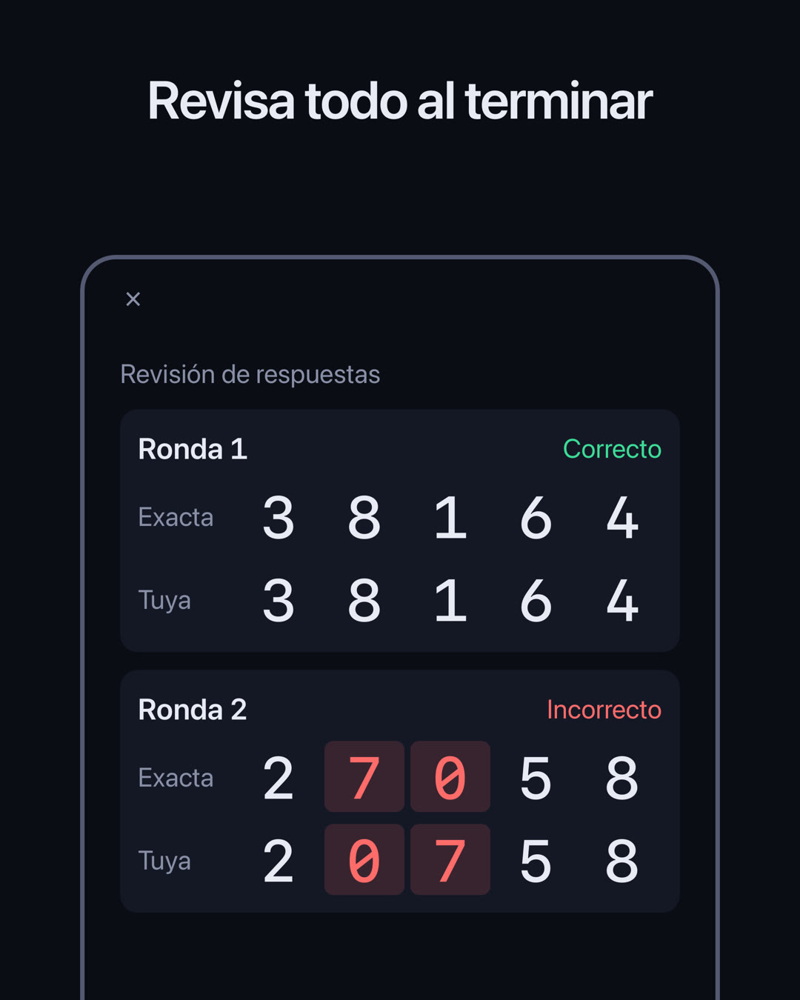
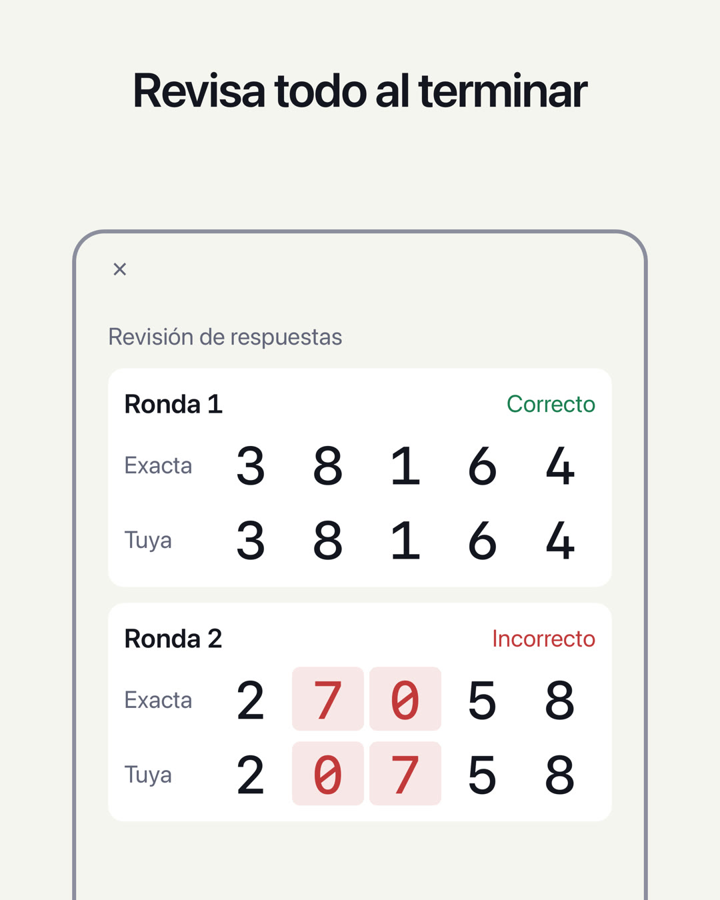

PRUEBA DE MEMORIA DE NÚMEROS / DIGIT SPAN
¿Cuántos dígitos puedes recordar?
Los dígitos aparecen de uno en uno. Cuando desaparecen, escríbelos en el orden en que salieron. Elige un nivel (número de dígitos) y responde 5 rondas. El nivel más alto en el que aciertas las 5 indica cuántos dígitos puedes retener: tu amplitud de dígitos (digit span). Una prueba sencilla de memoria a corto plazo.
Próximamente (para iPhone, uso gratuito)

Cómo funciona
- Mira los dígitosAparecen de uno en uno (0,7 segundos cada uno por defecto).
- Escríbelos en el mismo ordenEn el modo Al revés, escríbelos empezando por el último que salió.
- Revisa las 5 rondasCinco rondas con el mismo número de dígitos. En cada ronda solo se indica si has acertado o no; al terminar, ves todas las respuestas juntas. El nivel más alto en el que aciertas las 5 es tu amplitud de dígitos.
Guía completa y preguntas frecuentes →
Características
- Dos pruebas, En orden y Al revés, cada una con su propio récord personal. En Al revés tienes que reordenar los dígitos mentalmente, así que también entra en juego la memoria de trabajo
- Revisa las 5 rondas en la pantalla Resultado: tu respuesta junto a la correcta, con los dígitos que no coinciden resaltados
- Consulta en la pantalla Historial cómo evoluciona tu récord personal día a día
- Cambia el nivel (de 2 a 12 dígitos) y la velocidad de los dígitos (de 0,05 a 2,0 segundos)
- Elige cómo se presentan los dígitos: Pantalla, Voz o Ambos. Con Voz, la prueba se hace solo de oído
- Elige un tema (Sistema, Claro u Oscuro) y un color (Violeta, Azul, Naranja o Rosa)
- Todos los dígitos son monoespaciados, en una pantalla limpia, sin adornos, como un instrumento de medida
- Los registros se guardan solo en tu dispositivo. Sin inicio de sesión
Se suele decir que la referencia para un adulto medio es de 7±2 dígitos en orden directo (Miller, 1956). Esta app solo cuenta un nivel cuando aciertas las 5 rondas con el mismo número de dígitos, así que la forma de puntuar es distinta de la de las pruebas habituales. Sirve para comprobar cuántos dígitos puedes retener; no es un diagnóstico médico ni tiene como fin mejorar la memoria.
App hermana
Sobre los anuncios
Se muestran anuncios en la parte inferior de las pantallas Inicio, Resultado e Historial. Al empezar una prueba (Empezar prueba en Inicio u Otra vez en Resultado; una de cada dos veces) se muestra un anuncio a pantalla completa. No se muestran anuncios mientras ves los dígitos, escribes tu respuesta o ves si has acertado.
Con la suscripción Premium activa (mensual, de renovación automática; el precio se muestra en la app y en el App Store) no se muestran anuncios. Se renueva automáticamente salvo que la canceles al menos 24 horas antes de que termine el periodo actual. Consulta los Términos de uso para conocer las condiciones y cómo cancelarla. Todas las funciones de las pruebas y del historial se pueden usar sin suscribirse.